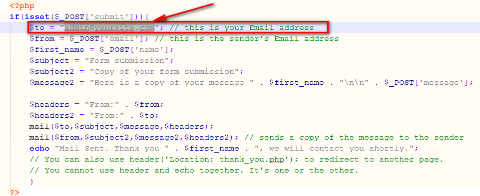

Thank you for purchasing my theme. If you have any questions that are beyond the scope of this help file, please feel free to open a new ticket at our support forum
<!-- fonts files --> <link href='http://fonts.googleapis.com/css?family=Open+Sans:400,300,600,700,800' rel='stylesheet' type='text/css'> <link rel="stylesheet" href="fonts/Oxygen.css"> <link rel="stylesheet" href="fonts/RobotoMedium.css"> <link rel="stylesheet" href="fonts/RobotoLight.css"> <link rel="stylesheet" href="fonts/Lato-Semibold.css">
<!-- CSS files --> <!-- Bootstrap css --> <link rel="stylesheet" href="css/bootstrap.css"> <!-- uikit --> <link rel="stylesheet" href="css/uikit.css" /> <!-- Font awesome css --> <link rel="stylesheet" href="css/font-awesome.css"> <!-- Stroke Font Icon css --> <link rel="stylesheet" href="css/pe-icon-7-stroke.css"> <!-- Animate css --> <link rel="stylesheet" href="css/animate.css"> <!-- VenoBox css --> <link rel="stylesheet" href="css/venobox.css"> <!-- Owl carousel 2 css --> <link rel="stylesheet" href="css/owl.carousel.css"> <!-- SLIDER REVOLUTION 4.x CSS SETTINGS --> <link rel="stylesheet" type="text/css" href="js/rs-plugin/css/extralayers.css" media="screen" /> <link rel="stylesheet" type="text/css" href="js/rs-plugin/css/settings.css" media="screen" /> <!-- Theme --> <link rel="stylesheet" href="css/reset.css"> <!-- Custom css --> <link rel="stylesheet" href="style.css"> <link rel="stylesheet" href="css/responsive.css">
<!-- jQuery Latest version --> <script src="js/vendor/jquery-1.11.3.min.js"></script> <!-- Google Maps API --> <!-- <script src="https://maps.googleapis.com/maps/api/js"></script> --> <!-- Bootstrap JS --> <script src="js/bootstrap.js"></script> <!-- UIKIT JS --> <script src="js/uikit.js"></script> <!-- revolution slider js --> <script src="js/rs-plugin/js/jquery.themepunch.plugins.min.js"></script> <script src="js/rs-plugin/js/jquery.themepunch.revolution.min.js"></script> <!-- jQuery Counterup --> <script src="js/jquery.counterup.min.js"></script> <!-- jQuery Waypoints --> <script src="js/waypoints.min.js"></script> <!-- jQuery ScrollUp --> <script src="js/jquery.scrollUp.min.js"></script> <!-- jQuery sticky --> <script src="js/jquery.sticky.js"></script> <!-- jquery nav --> <script src="js/jquery.nav.js"></script> <!-- jquery mix-it-up --> <script src="js/jquery.mixitup.min.js"></script> <!-- jQuery easing --> <script src="js/jquery.easing.1.3.min.js"></script> <!-- jQuery owl carousel --> <script src="js/owl.carousel.min.js"></script> <!-- jQuery Parallax --> <script src="js/jquery.parallax-1.1.3.js"></script> <!-- jQuery countdown --> <script src="js/jquery.lwtCountdown-1.0.js"></script> <!-- jQuery flickrfeed --> <script src="js/jflickrfeed.min.js"></script> <!-- jQuery VenoBox --> <script src="js/venobox.min.js"></script> <!-- WOW Animation --> <script src="js/wow.js"></script> <!--Activating WOW Animation only for modern browser--> <!--[if !IE]><!--> <script type="text/javascript">new WOW().init();</script> <!--<![endif]--> <!--Oh Yes, IE 9+ Supports animation, lets activate for IE 9+--> <!--[if gte IE 9]> <script type="text/javascript">new WOW().init();</script> <![endif]--> <!--Opacity & Other IE fix for older browser--> <!--[if lte IE 8]> <script type="text/javascript" src="js/ie-opacity-polyfill.js"></script> <![endif]--> <!-- jQuery main script --> <script src="js/main.js"></script>
Please open the file contact-process.php, add your email here. and upload on FTP server. Contact form will working fine.
